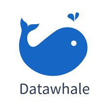
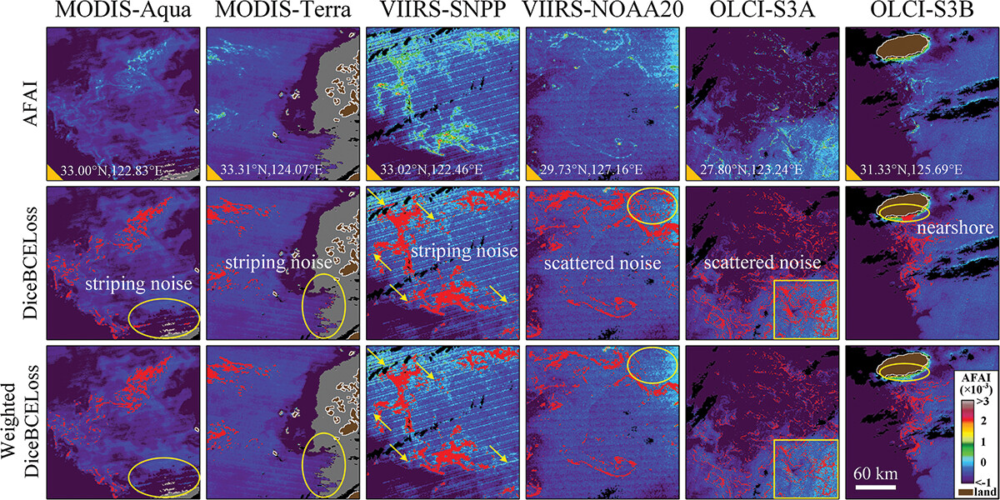

🎓 I am Jiajie Li, a PhD candidate based in Wuhan, focusing on computer vision and spatiotemporal image processing. My research interests include image reconstruction, inpainting, super-resolution, and multi-source data fusion. I am currently developing unified vision frameworks that integrate spatial, temporal, and multimodal information, with a strong interest in deep learning and practical computer vision applications.
🌱 With an interdisciplinary background in environmental ecology, remote sensing, and mathematical statistics, I have developed a strong foundation in spatial analysis and temporal modeling. My research has evolved from traditional image processing and statistical methods to deep learning-based image reconstruction and multimodal fusion, enabling me to approach vision problems from both theoretical and real-world perspectives.
💻 I enjoy exploring emerging topics in computer vision, image and video processing, and multimodal large models. I value continuous learning, open collaboration, and technical exchange. Feel free to reach out if you are interested in academic discussions, research collaboration, or related projects.
▶ 🎓 Academic Background 2

▶ 💻 Research Experience 3

▶ 📄 Object Detection 1
